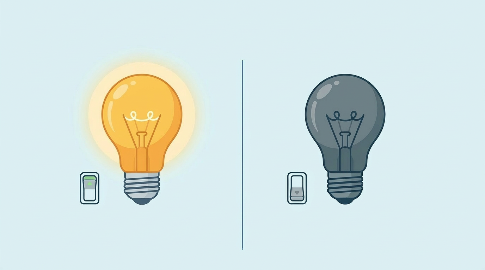
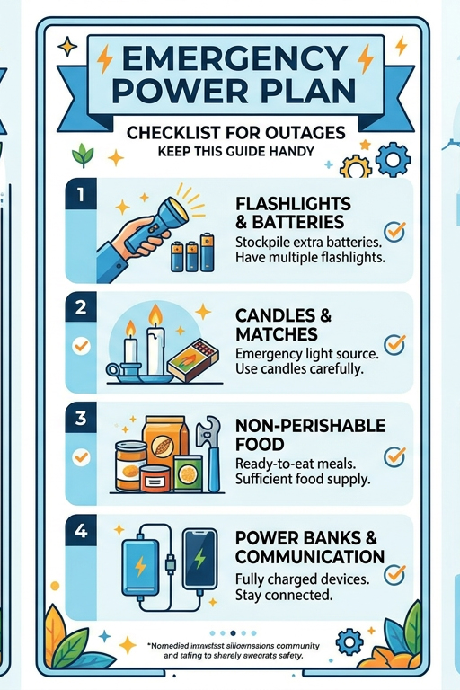
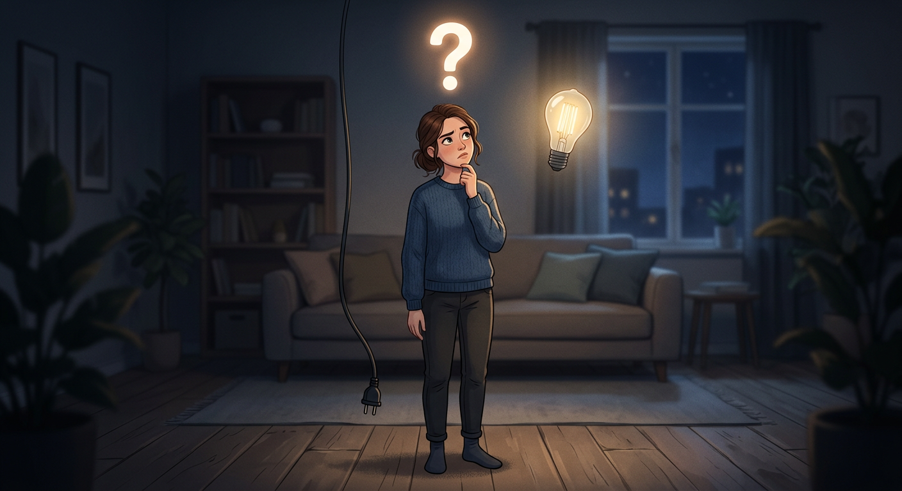

Artikel: Alt du skal vide, inden du bestiller strøm første gang
Hvad er en god elaftale? Hvad koster strøm? Hvad betaler du for?
Læs med her, lær at navigere i
el-universet og træf den helt rigtige beslutning for dig selv

Alt du skal vide, inden du bestiller strøm første gang
Forstå strømpriserne
Fast og Variabel Tarif: Strømpriser kan være faste eller variable. Faste priser forbliver de samme i en bestemt periode, mens variable priser kan ændre sig månedligt. Overvej, hvad der passer bedst til dit budget.
KWh-pris: Du betaler for elektricitet pr. kilowatt-time (kWh). Jo mere energi du bruger, desto højere bliver din regning. Hold øje med din energiforbrug for at undgå overraskelser.
Vælg den rette Leverandør
Sammenligning: Brug online sammenligningssider til at finde de bedste tilbud. Tjek anmeldelser og kundeservice vurderinger for at sikre, at du vælger en pålidelig leverandør.
Bindingsperiode: Vær opmærksom på, om der er en bindingsperiode. Nogle aftaler kan låse dig fast i en længere periode, hvilket kan være en ulempe, hvis du ønsker fleksibilitet.
Vær opmærksom på skjulte omkostningerne
Abonnementsafgifter: Nogle leverandører opkræver månedlige abonnementsafgifter, udover selve strømforbruget. Sørg for at læse det med småt!
Nettoafgifter: Husk, at strømregningen også inkluderer afgifter til netdrift. Disse omkostninger går til vedligeholdelse af elnettet og kan variere afhængigt af, hvor du bor.
Bestilling af strøm
Dokumentation: Når du bestiller strøm, skal du have nogle oplysninger klar, som dit CPR-nummer, adresse, og evt. tidligere måleraflæsninger.
Tid til tilslutning: Vær opmærksom på, at det kan tage et par dage, før strømmen er tilsluttet. Det er en god idé at bestille strøm i god tid, så du ikke står uden lys, når du flytter ind.
Guide: Ingen strøm. Kun dig og mørket. Sådan overlever du uden strøm
Intet lys, kun dig, mørket og stilheden fra køleskabet. Du skal redde dig selv ud af denne "ingen strøm"-nødsituation, men hvad gør du, imens du venter på strømmen?

Ingen strøm. Kun dig og mørket. Sådan overlever du uden strøm
1. Bevar roen – selv når mørket føles tungt
Det første chok rammer hurtigt. Du står midt i flyttekasser, uden lys, uden overblik. Pulsen stiger. Stop op. Træk vejret. Du skal nok få strøm igen – men indtil da handler det om at overleve ventetiden. Få bestilt strøm (se artikel 1), og find det, du kan bruge her og nu: stearinlys, en lommelygte, måske din mobil som sidste lyskilde. Flammerne fra et stearinlys kan føles som din eneste allierede – men husk: de er lige så farlige, som de er trygge. Hold øje med dem.
2. Kampen om maden
Dit køkkenbord er fyldt. Madvarer, der langsomt bevæger sig mod forfald. Uden strøm er tiden imod dig. Du må tænke hurtigt. Har du en køleboks? Brug den. Fyld den med is fra nærmeste butik. Ingen køleboks? Så må du improvisere – selv en vask fyldt med is kan blive din redning. Spis strategisk. Start med det, der ikke overlever længe. Og accepter virkeligheden: Nu er det simpelt. Ingen komfur. Ingen ovn. Kun det, der kan spises direkte – sandwiches, wraps, nødder, barer, frugt. Overlevelsesmad.
3. Når mørket falder på – gør det til dit
Mørket kan føles klaustrofobisk. Eller… magisk. Det er dit valg. Tænd stearinlys. Inviter venner over. Lav en improviseret middag i flammernes skær. Bed dem tage batterier, powerbank eller andet, du har brug for. Grin, spil og lad mørket blive en kulisse i stedet for en fjende. For midt i kaosset gemmer der sig noget uventet: en pause fra det hele.
4. Din livline: batteriet
Din telefon er ikke bare en telefon længere – den er din forbindelse til verden. Og batteriet? Det er tid. Sluk alt unødvendigt. Hver procent tæller. Hvis du har en powerbank, er du heldig. Hvis ikke, må du opsøge civilisationen: en café, et sted med lys, varme og stikkontakter. Sæt dig ned. Bestil en kaffe. Lad dine enheder genoplade – og måske også dig selv.
5. Stilheden – din nye virkelighed
Ingen skærme. Ingen støj. Kun dig og dine tanker. Det kan føles ubehageligt. Eller befriende. Find et brætspil frem. Læs en bog. Tegn. Skriv. Eller sid bare stille et øjeblik. For hvornår gør du egentlig det?
6. Lær af mørket
Når strømmen endelig vender tilbage, og lyset blænder dig, er det fristende bare at gå videre. Men stop op et øjeblik. For du har lige været igennem noget. Brug det. Forbered dig. Lav dit eget nødkit: lommelygte, batterier, stearinlys, tændstikker, powerbank, snacks, måske et gasblus. Næste gang står du ikke magtesløs.
Fortælling: "Fra mørke til lys" - min første nødsituation
Et klik på kontakten – og ingenting. Instant panik. Hvad der skulle have været nyt kapitel. I stedet stod jeg alene i mørket – midt i min første nødsituation. Læs historien om det døgn, hvor jeg gik fra total kontrol til totalt mørke og langsomt fandt vej tilbage til lyset.

Fortælling om døgnet uden strøm: "Fra mørke til lys"
Jeg havde forestillet mig det øjeblik så mange gange. Nøglen i hånden. Min egen hoveddør. Et lille klik – og så var det officielt: mit liv, mit sted, mit ansvar. Jeg stod foran opgangen med det første læs: en fyldt backpackerrygsæk og to propfyldte IKEA-poser. Senere ville et flyttehold komme med resten, og jeg havde været så smart at bestille dagligvarer til levering et par timer senere. I kroppen sad den velkendte blanding af frihed og nervøsitet. Jeg anede bare ikke, hvad jeg havde overset. Lejligheden duftede af støv og noget indelukket, da jeg åbnede døren første gang. Solen faldt skråt ind gennem vinduerne og tegnede firkanter på det rå trægulv. Jeg stillede mine ting og gik rundt, som om jeg trådte ind i en scene, jeg endnu ikke kendte replikkerne til. “Her skal min sofa stå,” sagde jeg højt. “Og her… måske et spisebord?” Timerne gik roligt. Jeg tørrede køkkenbordet af, åbnede vinduerne og lod musik fylde rummet. Jeg dansede mellem kasserne og ignorerede, hvor meget der manglede. Flytteholdet kom. Varerne blev leveret. Tingene faldt på plads. Jeg var euforisk. Først da solen gik ned, ændrede stemningen sig. Jeg trykkede på kontakten. Klik. Ingenting. Jeg prøvede igen. Klik. Stadig mørke. Jeg gik ud i gangen. Klik. Mørke. Uroen bredte sig. Jeg tændte lommelygten. Skyggerne voksede. Jeg stod foran eltavlen. “Hvad gør man?” Intet reagerede. Ingen klik, ingen summen. Kun stilhed. Jeg satte mig på køkkengulvet. Hvad er det, jeg har overset? Jeg havde googlet alt. Undtagen det her.
Jeg googlede igen: “ingen strøm ny lejlighed hvad gør man”, “skal man bestille el selv???” Svaret var entydigt. Ja. Jeg ringede til min mor. “Mor… der er ikke noget strøm.” “Har du tjekket sikringerne?” “Ja… jeg tror, det er fordi, jeg ikke har bestilt el.” En pause. “Åh skat… det har du ikke?” Hun lød ikke overrasket. “Det er okay. Det fik jeg heller ikke styr på første gang.” Jeg lagde på. Klokken var for mange. Jeg kunne ikke gøre mere. Og så ramte næste problem. Maden. Jeg åbnede køleskabet. Mørke. Stilstand. Mælk, yoghurt og kødpålæg – en tikkende tidsbombe. Jeg googlede igen og indså det åbenlyse: et køleskab uden strøm er bare et skab. Jeg trak jakken på, gik ned i kiosken, købte isterninger og skyndte mig tilbage. I køkkenet fordelte jeg isen i skåle, lagde varerne ned til dem, dækkede det hele med et viskestykke og satte det ind i køleskabet. En improviseret løsning. Men en løsning. Den nat sov jeg i stilhed. Telefonen lå ved siden af mig som en livline med 15 procent tilbage.
Næste morgen vågnede jeg tidligt. Solen var tilbage. Min telefon havde 4 procent. Jeg tog tøj på, greb mobil og oplader og gik ud. På en café fandt jeg strøm, wifi og overblik. Jeg begyndte at undersøge elselskaber. Der var flere, end jeg havde regnet med. Jeg ringede. “Skal vi sætte det i gang med det samme?” Jeg havde lyst til at sige ja, men holdt igen. Sammenlign priser. Jeg ringede videre. Næste selskab. Tredje. Fjerde. Jeg noterede, spurgte, forstod halvt. Efter fem opkald ringede jeg tilbage til det tredje. “Jeg tror… jeg tager det her.” “Godt valg.” Tilbage i lejligheden ventede jeg. Timerne gik. Jeg pakkede ud, drak vand fra hanen, spiste en tør bolle og hentede nye isterninger, så maden holdt sig kold. Jeg trykkede på kontakten igen og igen. Klik. Ingenting. Indtil. Klik. Et blink. Og så – lys. Rummet ændrede sig øjeblikkeligt. Fra tomt til levende. Jeg stod stille og trak vejret. Det havde taget et døgn. Alt for mange opkald. En hel del hjertebanken. Men jeg havde gjort det selv. Og næste gang jeg flytter, er der én ting, jeg ikke glemmer.
Spørgsmål om el?
Er du ikke blevet klogere og undrer du dig stadig over el-universet, så skriv endelig til os her
Se mere